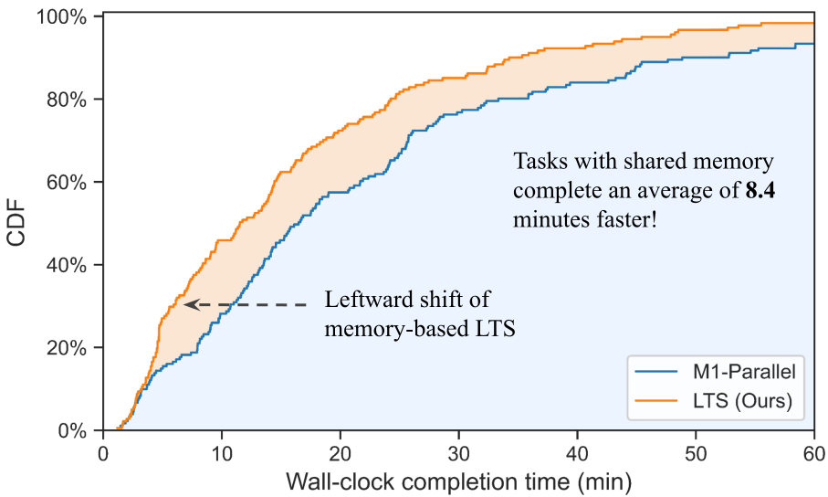
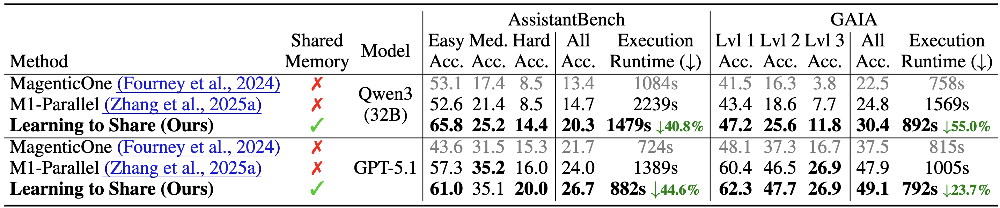
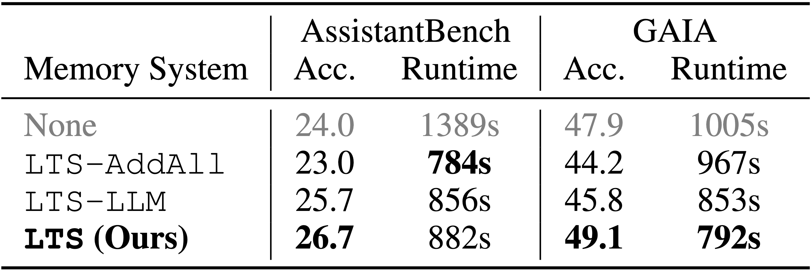

Paper Details
Method Diagram

Agentic systems solve complex tasks by coordinating multiple agents that iteratively reason, invoke tools, and exchange intermediate results. To improve robustness and solution quality, recent approaches deploy multiple agent teams running in parallel to explore diverse reasoning trajectories. However, parallel execution comes at a significant computational cost: when different teams independently reason about similar sub-problems or execute analogous steps, they repeatedly perform substantial overlapping computation. To address these limitations, in this paper, we propose

Notably, the runtime improvements do not come at the cost of degraded solution quality. Table 1 shows that selective shared memory improves performance across both benchmarks and model backbones. Compared to the memory-free M1-Parallel, LTS achieves higher accuracy across nearly all difficulty levels while reducing runtime. On GAIA, LTS consistently improves performance across all difficulty tiers, with overall absolute gains of +5.6 pp for Qwen3-32B and +1.2 pp for GPT-5.1. A similar trend is seen with AssistantBench. These gains indicate that selectively sharing verified intermediate steps not only reduces redundant computation but also steers teams toward more reliable reasoning trajectories. Notably, the improvements are most pronounced on the hardest subsets of each benchmark, suggesting that Learning to Share is particularly effective for long-horizon tasks with many required steps/possible solution paths.


We proposed a learned shared-memory mechanism for parallel agentic systems that enables selective reuse of intermediate information across teams. By introducing a global memory bank and a lightweight controller that learns which steps are worth sharing, our approach reduces redundant computation while matching or improving task performance. Experiments on the AssistantBench and GAIA benchmarks demonstrate consistent wall-clock runtime reductions compared to memory-free parallel baselines, whereas naive memory sharing fails to achieve similar gains. These results suggest that treating memory admission as a learned control problem is a promising direction for improving the efficiency of parallel agentic frameworks.
For more technical details and results, check out our attached main paper, thank you!
@inproceedings{fioresi2026learning,
title={Learning to Share: Selective Memory for Efficient Parallel Agentic Systems},
author={Fioresi, Joseph and Kulkarni, Parth Parag and Vayani, Ashmal and Wang, Song and Shah, Mubarak},
booktitle={arXiv},
year={2026}
}